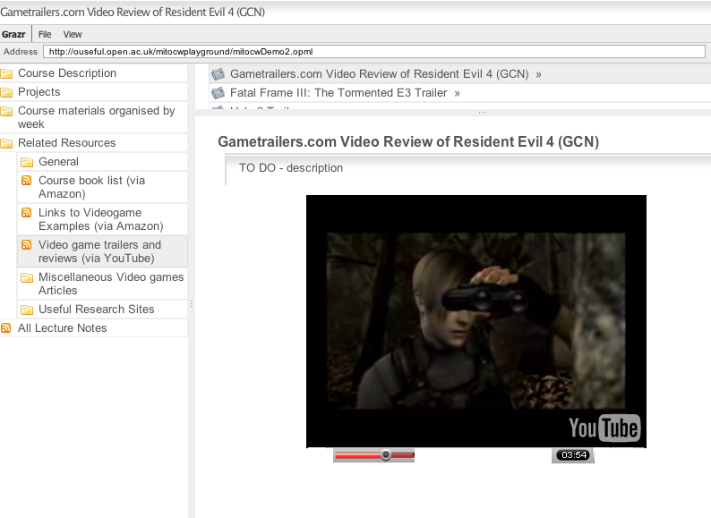
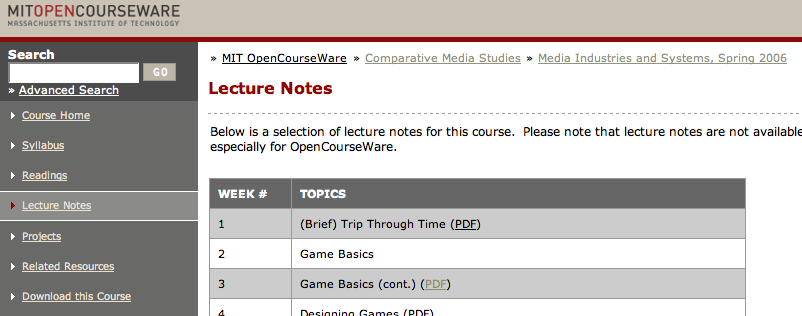
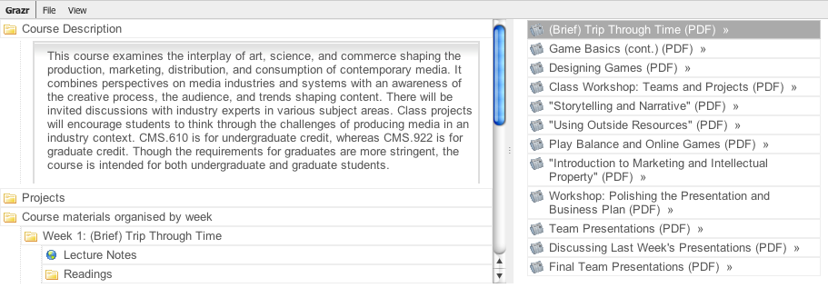
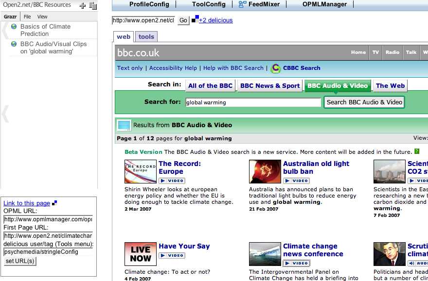
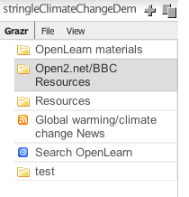
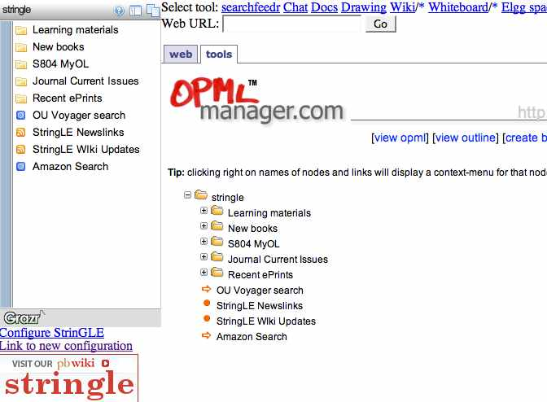

July 10, 2007
PLE = Platform Learning Environment?
I've been thinking back over my tinkerings with the Stringle string'n'glue environment over the last week or two - in fact, since the Facebook platform launch - and I think the idea of it was just right (a single container for third party apps) with a significant missing ingredient - the idea of turning Stringle into a fully fledged platform.
The Facebook platform does what Stringle was intended to do - provide a single place to go to use 3rd party apps. However, Facebook goes further by encouraging 3rd party application providers to hook into Facebook itself (which was a step I hadn't envisioned for Stringle, but which, with hindsight, follows naturally...)
Facebook also has a considerable user community, which is a great incentive for third party app developers wanting to expand their reach. (In fact, Facebook is so attractive - for the moment, bearing in mind that Facebook will die - that there is now even a VC fund dedicated to Facebook app developers. Hmm...are there any "widget developer only" funds, I wonder? or eBay developer funds? or Amazon developers funds, even?)
At the moment I have Zoho (heh heh ;-)) and Slideshare as apps added to my Facebook profile (as well as a couple of others), which provide me with online office tools and presentation sharing/viewing.
In use, these two applications demonstrate two different ways of integrating Facebook with third party apps.
When you add Slideshare (and also Splashcast) to Facebook, a new account is created on the third party app, tied to your Facebook account. (I'm not sure if this means I can log into the app directly, and not through Facebook, maybe using an ID with some sort of Facebook tag embedded in it? (I can imagine the potential for all sorts of name registration collisions otherwise...) This is great if you don't already have a Slideshare account - one click registration is effectively provided - but potentially a pain if you do (although you can import slideshows from other Slideshare accounts)).
Adding Zoho, on the other hand, allows you to associate an outstanding Zoho account, or create a new one.

The integration extends as far as providing a list of files associated with all your Zoho apps (personal and shared) - documents, presentations, spreadsheets and so on. A Zoho Office directory, if you like. Clicking any link opens that document in a new window in the appropriate Zoho application.
One possible downside of the latter approach - associating third party app credentials with a Facebook account - is the need to "lend" Facebook your login details for other services.
OpenID would be brilliant here - being able to associate an OpenID with your Facebook account would make registering with OpenID enabled third party applications trivial (on adding an app Facebook would try to log you in with the OpenID you had associated with the Facebook account). For maintaining accounts on third party services, a Facebook authenticated OpenID might provide an efficient approach?
It will be interesting to see how long Facebook retains its mantle, give the increasing commoditisation of social networks, and the "1-click" network custom social network set-up that services like Ning offers. Facebook is sticky, though.
I'm also watching out for someone to "do an AOL" and start shipping a customised browser, optimised for social networking - something like Flock maybe?
(Many players, large and small, offer browser extensions, of course. For example, eBay recently launched a Firefox ebay edition toolbar, but the degree of customisation it provides is limited.)
PS I can't resist posting this. I always thought that Second Life was - for most people - just a glorified chat client: AjaxLife ;-)
June 01, 2007
Personal Learning Environments are also Social...
Whenever I do a social bookmarking workshop, one of the first things I stress is the social bookmarking tools are - first and foremost - personally useful: they are provide an excellent way of managing your own link collections without being locked to your favourites/bookmark list on a particular browser on a particular computer (though if Zinkmo does what it says on the tin, cross-computer/cross-browser bookmark synching now seems to be available...).
They're also useful socially too, of course - pivot browsing by user or tag are great ways of discovering resources related to a particular topic, via a human filter.
That said, the social tool I find I'm using most at the moment on delicious is, actually, a person-to-person tool: link sharing with individuals using the for: tagging construct.
Which brings me to personal learning environments, once again via the Facebook Platform, (e.g. Facebook Platform or VLE - where would YOUR students prefer to be?; read more about the Facebook Platform here. TechCrunch also has an interesting take on it, comparing the browse model of resource discovery at Yahoo with the search model of Google and the 'social push' sharing model (over a social graph) of Facebook).
In particular, I think the Facebook Platform could be a great personal learning environment because it offers powerful social networking tools, as well as the recently announced possibilities for personal tool integration.
For social tools to succeed, they should also be personally useful. Maybe personal learning environment frameworks*, in turn, need to have rich social functionality to really take off? Which is exactly what Facebook offers.
For institutions, the knowledge that groups can be formed around a particular cohort are also important features - and again, Facebook can offer this sort of functionality.
For individual students, being able to form small working groups (tutor groups, for example) is potentially useful (and something that is observed in OU courses via online tutor group conferences/forums).
*Personal Learning Environment Frameworks: there's been a lot of talk that a "PLE is not a thing" (Stephen Downes has commented on this quite a bit too) and whilst I agree it's not a thing, I do think that there are containers - or frameworks - that allow a range of personal and social tools, as well as information feeds and storage, to be collected together in some way (via linking or embedding) to offer the user a single 'place to go' to access these tools; a (personal) learning workspace, if you like.
This workspace is personal because the user has some control over the high level navigation and layout of the workspace, as well as some control over the access permissions they can use to share their personal assets with others.
So if I talk of a PLE as a thing, I really mean enabling technologies that let me aggregate a range of tools into a space. And why would I want to do that? So institutional providers can give their students something - a place to go - when they arrive on day one that will provide them with access to tools and information services that they are likely to find useful over the course of their studies.
Being able to disaggregate the tool set, whether by dropping tools or continuing to use them out of the context of the environment (maybe when the student graduates, or in their personal life) are also important requirements.
May 25, 2007
PLE as a Platform?
Ok - so maybe a PLE is a platform...?
...and maybe a candidate platform is Facebook (developer info)?
The main idea is that Facebook will bve exposing third party apps through the Facebook website. MySpace on steroids, MySpace done right, etc. etc.
Splashcast (one of the partners) has an overview movie of the new Facebook platform:
Read about it, err, everywhere at the moment: e.g. here or here, or here etc...
Now if they were also to integrate the Zoho suite of apps, that really would be something... it'd be almost as good as Stringle!?;-)
(I have a post in prep on Zoho at the moment. You want an integrated Web O/S - they're as close as anyone...)
April 25, 2007
Disaggregating an MIT OpenCourseware Course into Separate RSS Feeds
Picking up on a couple of points raised in An MIT OpenCourseWare Course via an OPML Feed, I've atomised the MIT OpenCourse Course CMS.610 / CMS.922 Media Industries and Systems, Spring 2006 a little further and replaced some of the OPML items with RSS feeds.
In particular, I've replaced the list of video games with a feed containing those items pulled from an Amazon Listmania list via a third party Listmania2RSS service (which I've used before in a similar context: OpenLearn/OCW Reading Lists).
I've also created a youTube channel with trailers/reviews of some of the example video games mentioned in the course. Applying the bookmarklet mentioned in Grazring YouTube Favourites Playlists to the youTube channel page creates a static snapshot (i.e. not live:-( RSS feed of the playlist, which can also be mixed into the course OPML (or view the course via grazr):

Finally, I added another Listmania list, this time for the books cited in the course.
..and as an afterthought, a link to a delicious feed pointing to a list of bookmarks of the books on the reading list that appear in Google Books. [Latency on replicating bookmarks across the delicious servers is really becoming an issue, methinks?]
Whilst I haven't done this (yet!), it's trivial to pipe the Listmania lists into an online shop, courtesy of something like Amazon aStores.
This incremental disaggregation approach (?!) is a route I'm keen on exploring further as a way of identifying patterns that can be used in reverse as exemplar mashup strategies, by aggregating content from reusable raw components, rather than disaggregating it into reusable component parts.
The disaggregation step does, however, have the beneficial side effect of producing reusable components from effectively closed (i.e. not trivially mashable or remixable) open content ;-)
PS for another take on educational mashup activity, check out the Open, Connected, and Social: mashups wiki page.
April 22, 2007
An MIT OpenCourseWare Course via an OPML Feed
Over the weekend, I noticed that MIT OpenCourseWare courses were offering a "Download this Course" option. Intrigued, I immediately grabbed a copy of the CMS.610 / CMS.922 Media Industries and Systems, Spring 2006 course and had a poke around inside it.
The download bundle is - I guess(?!) - a standard (?) IMS - err - package? (can you tell I'm not up on educational material interoperability standards?!;-)
That is to say, the zip archive file opens into a set of nested directories with an imsmanifest.xml document. The archive file also contained copies of the HTML pages used on the course website as well as the PDF versions of the course lecture notes.
What I had been hoping for was a 'clean' XML version of the course webpages (i.e. a single source document from which they had been generated). Some hope!
Anyway, my initial enthusiasm curbed somewhat, I felt there was still some mileage to be made in RSSifiying the course, for three main reasons.
Firstly to see if what came out was "sensible" - i.e. whether a feed based version of the course could be sensibly viewed in a Grazr or Stringle environment, for example.
Secondly, to get a feeling for how to decompose a feed-delivered version of the course into separate component feeds.
Thirdly, to see whether those component feeds could be automatically generated from the IMS manifest, or scraped from the MIT OpenCourseware web pages.
The course - as published on the MIT OpenCourseWare website - is structured according to the course syllabus, readings, lecture notes, projects (i.e. group and individual activities) and related resources.

As a first pass, I have generated an OPML version of the course that follows a similar structure. At the moment, this OPML feed is - to all intents and purposes - a monolithic feed. Over the coming weeks I intend to disaggregate it into separate component feeds that can be reaggregated in an OPML feed that pulls in separate OPML and RSS component feeds.
You can view the OPML version of the course here: MIT OCW CMS610 Spring, 2006, Comparative Media (via Grazr).

Note that at the current time, some of the links (to New York Times) resources require a NYT login. I will patch these as and when I can. In addition, the links to audio-visual resources should really be made available via an embedded player, as well as link to the original site.
A cursory scan of the OpenCourseWare site suggests that the way individual web pages are composed across different courses is rather arbitrary, which will make scraping the site to automate feed production somewhat tricky.
I should be thankful for small mercies in the way OpenLearn content is bundled as XML I suppose!
PS this is spot on.
April 05, 2007
Coherent Design Across Web Apps
Andy Rush of the UMW New Media Center has just released a consistent style/design across their WordPress blog and MediaWiki wiki:

The new site provides the user with a consistent and coherent style/form of navigation across the two apps.
With more and more apps allowing users to define their own skin/theme, the UMW new media site shows how - in principle - unified styling could be achieved across applications emebedded within a Stringle container.
This means I really need to: a) start identifying those stringle:tools (apps that work okay in an iframe ;-) that support user themes/styles/skins; and b) start thinking about a simple visual theme that will let me demo a proof of concept, coherent design stringle:profile.
At least two other pieces are required for a fully coherent stringle experience as well, though:
1) single sign on - OpenID may provide a way forward here?
2) interoperability between applications - so documents and content can be passed seemlessly from one app to another.
There are already glimpses of interoperability available, provide by the apps themselves - the ability to bookmark user created/customised pages on delicious for example (what I call 'roundtripping' in stringle - the ability to bookmark a a user created page in such a way that it becomes available in the stringle navigation widget), or the ability to open linked to office docs online using Zoho.
March 26, 2007
Scribd and the Role of Open Repositories
Some time ago, the Slideshare service launched, offering users the opportunity to upload and share Powerpoint presentations, as well as publishing them on the web in a small embedded slideshow player.
More recently, Scribd has entered the game, encouraging users to:
Put your docs online.
Scribd is a free online library where anyone can upload. Use our embeddable PDF player to publish and view documents right in your web browser.
Bulk upload now! No need to sign up.
Formats: .pdf, .doc, .ppt, .xls, .txt, etc.
I have to admit to having completely lost the plot now with respect to these "YouTube for arbitraryMedia" services.
But Scribd has got me thinking...
Many universities now run their own research paper repository - Open Research Online in the case of the OU.
But as far as I know, these are all independently hosted - and I don't think there is a federated search across them (?or maybe there is?)
So why don't JISC get it together to provide a Scribd sort of service for the HE community?
Hmm - they do, sort of, don't they, at least for teaching resources: Jorum:
Jorum is a free online repository service for teaching and support staff in UK Further and Higher Education Institutions, helping to build a community for the sharing, reuse and repurposing of learning and teaching materials.
I'm not sure how widely it's used - certainly I've never used it (but maybe I should...).
And I'm pretty sure that OpenLearn, for example, blanks it completely... (and vice versa).
The problem is, there are just soooooooooooo many places to share content now. And I'm not sure what the solution is? Maybe it's that I keep all my stuff where I want it, and then share it into the communities I want to, and let search engines/harvesters pull it into other communities where it's relevant (maybe letting me know when they do, and giving me the option of stopping them).
Anyway, I think I've worked out what PLEs are - they're the set of web services we each use for our own purposes; and they're personal because the combination we use is unique to each of us (oh, you use Google docs do you - I use Zoho; GTalk? I'm on MSN; flickr? no, Photobucket; Typepad? Wordpress...)
PS personally, I've started to experiment with Stringling ad hoc environments together...
March 14, 2007
GrazrScript Generator Studio
As an exercise in using Stringle to rapidly collect together resources related to a particular theme, I've pulled several of my grazrScript generating tools together into a GrazrScript Studio Stringle environment.
The environment collects together examples of my own demo GrazrScript interfaces and GrazrScript generators, as well as a collection of third party best of breed GrazrScript interfaces (please mail me/leave a comment suggesting additions to this list).
At the moment, there are grazrScript generators in there for generating:
- custom Amazon search forms;
- delicious user/tag link browsing and search;
- *NEW* blog outlinks search (search sites that are linked to from a particular domain, as well as browsing the feed (and outlinks) from that domain;
- a generic grazrScript generator for a Yahoo Search Pipe.
Best of breed examples currently include offerings from Adam Green, Marjolein Hoekstra and James E. Lee.
March 09, 2007
The Firefox Stringle Configuration
One of the things I need to get around to doing is writing up the Stringle interface design pattern: OPML fed navigation sidebar, RSS fed toolbar, tabbed DHTML content area.
As a step towards that, here's a recipe for demonstrating the pattern in a Firefox web-browser:
- bookmark your navigation OPML file and configure it to 'Open in Sidebar' (you can find instructions here, where a pattern very similar to the Stringle pattern is also described); Grazr have justed started hosting OPML feeds on their site, so I'll post a couple of exemplar feeds in the next few days.
- save an RSS feed containing links to your applications as a Live Bookmark; you can launch all the tools contained in the feed into separate tabs by clicking on the live bookmark and selecting 'Open in tabs';
When I get a chance, I will tweak the Stringle Profile Selector page so that it explitly links out to the OPML and RSS files used in the configuration.
PS As well as the free OPML hosting announcement, Grazr just announced a $1.5M round of financing as well as adding Dan Bricklin (co-creator of VisiCalc) to the Board of Directors. Congrats, chaps :-)
March 02, 2007
Stringle Gets a Brush of Paint...
I've started doodling with Stringle so as this blog is the closest thing I have to a lab book, thought I'd better make a catch up post.
Stringle has had a lick of paint, as I start to move the styling over to YUI CSS components:

I've started trying to collect tools together that work within the Stringle iframe (though there are a couple of rogues in the list I need to pull out). You can see the list of tools I've collected so far on the StringLE Tool Selector page. I'm still working on the categories, as well as annotating the tools I've got (and continually collecting more). If you have suggestions for other tools, drop me a line.
There is also a list of Stringle profiles/configurations on the StringLE Profile Selector page. The profiles on this page are in various states of completion/disrepair (in fact, it's probably fair to say that they are all placeholder prfoiles at the moment to a greater or lesser extent), but they'll all be tuned over the next 3-4 weeks.
Stringle profiles, tool configurations and OPML navigation feeds are all bookmarkable via delicious, and reusable within delicious if you use the correct tagging convention: stringle:tool for a tool, stringle:profile for a profile. In addition, a stringle:ToolName tag alongside a stringle:tool tag will cause Stingle to display the tool in the top, tools menu bar with the title ToolName.
The tools page both pull in lists of links from delicious and then use dynamic Javascript/CSS to toggle the various views, so I guess they're AJAX pages? ;-) As ever, I'm only trying the tools out in Firefox 2.0, so bad things may happen in other browsers (drop me a line and bug report if so, along with a screenshot and ideally a fix, and I'll see if I can come up with a patch).
Usability on the tool and profile selectors is still off mark, as it is within Stringle too, but I've started thinking about that... (It surprised me how much more reliable the environment felt when I added the simple styling, even though none of the functionality changed!)
One thing I'm looking at doing is adopting a convention for the similar tagging of profiles, tools and naming of OPML Manager navigation feeds. This will enable me to shortcut the set up of a Stringle profile.
I'm also looking at reusable structures for the OPML navigation feed. An emerging model/demo can be seen in the stringleClimateChangeDemo (this works in FF on a Mac - not sure about elsewhere. Mail me if it feels/looks broken to you... ;-)

One thing I hope to explore is a 'keyword/search term semantic auto-configuration' route that will generate a canned OPML file according to a common structure when supplied with key terms to act as a starting point for further customisation of that profile on a particular topic. Think of this as a bit like an automatically generated starting point for topic based portal.
In a recent post on Pipes and HyperCard: Interactive vs Connected Media, Scott Wilson commented:
...the nature of content itself is changing. HyperCard, Flash, and the like are indeed tools of interactive media. However, interactive multimedia is no longer in fashion (who needs a "next page" button in a piece of content when we have ubiquitous hypertext? Why embed the movie in Flash when I can just link to YouTube?)Instead we have entered an era of connected media. Connected media does not contain interaction; instead content items are nodes in a network of connections that are the focus of interaction. The content is inside-out. The hot content today is not interactive - Flickr/Photobucket, YouTube, iTunes, RSS feeds all feature non-interactive content, yet the content is highly connected via layers of interlinked metadata (del.icio.us, technorati, recommendations, hyperlinks, comments...)
One thing I'm exploring with Stringle is how we can pull out appropriate, and small, related content networks and use them to support resource based learning around a topic at the centre of that network.
Once again, I think something like the circular diagram posted within John Breslin's Linking personal posted content across communities post could be useful to help me clarify this point/explore it further.
November 21, 2006
Are PLEs Actually Social or Collaborative Learning Environments?
I had a tinker with StringLE over the weekend to fix badly broken styling in IE and add support for user configuration of the toolbar and stylesheet. As I was doing so it struck me that most of the tools I have in the default setup are social tools.
For example, the StringLE default setup links to a chatroom, whiteboard and Flashmeeting, which are best suited to synchronous interaction with other people.
(Remember - tools appear in the Tools tab.)
Several other tools, whilst personally useful, also have a social dimension, in that they support (asynchronous) collaborative working (that is, document editing can be shared with others): the wiki, drawing tool and social' document editor, for example.
The 'personal' tools include the searchfeedr search engine intermediary service and links to a webtop, map generator and online video editor. Even then, the map is intended for sharing and searchfeedr can display other users' saved searches, as well as allowing you to search over other people's saved links.
Coming as I do from the how might we use "web 2.0" toys to support user created personal learning envrionments? position, it strikes me that just as many social tools are personally useful, personal learning environments can (should?) draw on a wide number of socially useful tools?
It may even be that collaborative group work using online tools is one way of driving individual students towards their personal use of online tools if that's what we want to encourage?
Anyway - back to StringLE. You can now customise any or all of the following URLs via the StrinGLE URL:
* the navigation OPML file,
* the toolbar feed,
* the 'splash' HTML page (that is, the page that loads in the Web tab when you first load StringLE),
* a CSS stylesheet and
* an included Javascript file (the Widget panel).
The toolbar feed is a delicious feed from a specified delicious user (or user/tag) combination. Links that are tagged with stringle:tool are pulled into the toolbar. For example, http://ouseful.open.ac.uk/stringle2.php?t=psychemedia/officeDemo&s=http://www.open2.net pulls in links from http://del.icio.us/psychemedia/officeDemo that are also tagged with stringle:tool. An additional tag can be used to define the label used as the link text for the link. In the example given, stringle:WordProcessor sets the link text as WordProcessor. The above URL also sets the splash screen to Open2.net.
All but the Widget panel feed can be configured from the StringLE configuration panel:

Hitting the Set URL button loads StringLE with the new configuration.
The configuration is also bookmarkable from the Link to this page link.
Full details here.
(I am going to start documenting StringLE on the StringLE wiki and post about it less here. To keep up, you may want to subscribe to the StringLE wiki changes feed.)
November 14, 2006
Online OPML Feed Management
A couple of people have asked over the last week or two whether I knew of an online OPML manager that could be used to create and organise hosted OPML feeds that could then be wired directly into StringLE.
I had a bit of a play over the weekend, and again today over lunch, and from the list of OPML managers I've collected, OPML Manager seems to fit the bill nicely.
So nicely, in fact, I'm using it to feed the default Stringle environment:

What this means is I now have a completely online solution for handling what gets fed into the Stringle navigation panel (remember, you can enter your own URL for the OPML feed using the customisation panel or the StringLE URL API).
I've added a link to OPML Manager from the top bar of StringLE. These tool links open in the Tools tab/panel (links from the Grazr navigation widget on the left hand side open in the Web panel).
You'll notice that the Grazr widget is now displaying a couple of OPML files (the blue feed icon). These are fed into Grazr as links - Grazr sniffs out the opml suffix and then handles them as you might expect it to...
I'm actually use these OPML files to pull in GrazrScripted search boxes - one for the OU Voyager library catalogue, one for Amazon (read more about Amazon in Grazr).
The Learning Materials section pulls in OpenLearn/Labspace content that I transformed to RSS, both directly and in a crude 'remix' - feeds generated from two Openlearn courses and piped through FeedDigest, along with a podcast feed, filtered using a couple of keywords, and then displayed in another Grazr widget (I'll pop a diagram up to show how it works in a couple of days...;-)
One thing I noticed doing this is that Grazr is capable of playing audio files embedded in a feed - there are some examples in the Learning materials section under 'Search Related IT Conversations' and here:

Apparently, embedded movies are also on the way...
If you try out StringLE, why not pop in to the chat room to see if anyone else is there. There is also a wiki that I'm going to start adding content to, too, but feel free to chip in (anonymous access is allowed but you need the password: StringLE).
If anyone wants an invite to the demo whiteboard or Elgg space, mail me... or leave a note in the wiki (create an Invites... page if there isn't one there already...)
November 01, 2006
StrinGLE URL "API"
Just a quick post to say I've put a tweaked version of Stringle in a new location: http://ouseful.open.ac.uk/stringle1.php and added a very clunky configuration tool:

Clicking on the 'Configure StrinGLE' link will open up the configuration panel, where you can enter (optional) URLs for the navigation OPML file and the 'splash' HTML page - that is, the one that loads when you first load the page.
When you click on the 'set URLs' button, the 'Link to new configuration' link will be configured to load a StrinGLE page using the supplied URL(s) when it is clicked.
The link uses the following URL arguments:
http://ouseful.open.ac.uk/stringle1.php?s=SPLASH-URL&o=OPML-URL
You should enter URLs in the form: http://www.bbc.co.uk (which could be used to load the BBC home page as the splash screen, for example).
The s= argument sets the splash screen, the o= argument sets the navigation OPML URL. There is a third switch available, w= that lets you define the URL that loads the Widgetbox widget panel script.
Over the next week or two I'll try and tweak the social bookmarking OPML feedroller so that it can produce an online feed that will pipe in navigation from a set of organised delicious feeds (so that different tags can be used to set up different navigation feed menus).
In the meantime, you can still use the social bookmarking feedroller to create OPML files that you can save and upload to your own server, and that you can then point to from StrinGLE.
You can also feed the feedroller direct using the OPML link generated for a particular profile by the OPML feedroller (this wasn't working earlier today, but does work now....). If you want to set up feeds for several tags from the same social bookmarking account, separate the different tags by a space:

Use the generated OPML link as the OPML navigation link in Stringle:

I knew that feed roller tool would come in handy one day! ;-)
October 31, 2006
Stringle - Towards a String'n'Glue Learning Environment
How easy is it to pull together a presentational learning environment, I wondered to myself last week? Very easy it turns out, in part becasue of the way the web is turning into a huge logical Lego set via web services, embeddable page widgets and web feed wiring.
Take this quick'n'dirty attempt, for example, that demonstrates how pre-existing library related web feeds,RSS'ified OpenLearn content and 3rd arty widgets can be pulled together into an almost integrated environment in a dozen lines of HTML - I call it StrinGLE, for string'n'glue learning environment:

The environment has three panels:
- a sidebar navigation widget that feeds off an OPML file; when an actual HTML page web link is reached, it is opened in the main display area;
- a sidebar Widgetbox that can host one or more widgets - or as I see it, itinerant functionality (and content) from other web sites;-)
- a central main display area; in the screenshot above, I show a second embedded Grazr widget, this time displaying RSS'ified OpenLearn content, but it just as easily be a normal HTML page:

Note that this is very much a first attempt, that I had held off posting for a few days in the hope of adding a few more features - bookmarking buttons, one click feed subscription and so on, each of them no more than a half-hour hack (except searchfeedr integration, which may take a couple of hours...) - but spare half-hours are a scarce resource at the mo, so here's the very first Stringle as a placeholder and note to self to keep playing with this.
The second round of features should perhaps be integrated content editing tools, maybe something along the lines of Downes' RSS writr blogging tool.
Anyway, all to play for. All open source. All plug'n'play. All for free :-) Sort of....
October 21, 2006
Does VLE=Vertical Learning Environment?
A Technology Guardian article a week or so ago had an interesting article ("Joined-up experiences") on horizontal vs. vertical integration in consumer entertainment technology.
A couple of things in particular resonated with some of the muddled thoughts I've been having about personal learning environments (PLEs).
For example: "vertical integration of online store, PC and portable player" got me thinking about monolithic VLEs (vertical learning environments?), all-in-one managed solutions for taking the choice away from students in the tools they use/environments they are provided with - or at least, encouraged to use under threat of no technical support otherwise, by their educational institution.
The alternative is so-called horizontal integration. For example, in Microsoft's rival Plays For Sure music system, users have a wide choice of MP3 players from different manufacturers, and a wide choice of online music stores, with Microsoft's PC-based Windows Media Player in between. Devices and music services are supposed to be interchangeable, but all must support Microsoft's digital rights management (DRM) if they want to copy-protect songs. However, this is openly licensed: anyone can play.
Hmm - so that's like a PLE as ad hoc learning environment, then, where users can use whatever tools they like as long as they conform to standard protocols and file formats (email, RSS/web feeds, word processor document formats, and so on).
Many of us have seen it all before. Data processing was like this from the start and the ultimate master of vertical integration was IBM. It did the research, designed and built the hardware, software and networking, told you what you needed, trained your staff and did the maintenance.
...
These integrated systems suited customers who did not know much about computing. However, they soon discovered the catch: once you had bought a system, it was hard or perhaps impossible to switch to a different supplier.
...
Soon, most of the big vertically integrated computer suppliers disappeared, to be replaced by big parts suppliers ... . Competition removed much of the vendor lock-in and brought prices crashing down.
Unfortunately, it also meant that if system suppliers were no longer doing the vertical integration, customers had to do it themselves. In effect, they had to assemble their own systems from parts that might never have been tested together. No wonder the result often resembled Frankenstein's monster.
So what's the trend in education?
In the horizontal approach, it is likely that the students will be largely responsible for personalising their own learning environment at quite a fundametal level (i.e. the technologicial level that underpins - or mediates - their online interactions). However, the perceived need to offer student technical support (or maybe the fear of losing control...?) means that Your University Academic Computing Service are likely to favour the VLE approach:
Vertical integration may now be making a comeback because consumers are facing the problems businesses faced before: integrating a wide array of products that they barely understand.
There is another reason why 'verticalisation' may be coming back into favour in the consumer technology sector. Towards the end of thre Guardian article, technology consultant Geoffrey Moore is quoted as saying:
"In the old vertical model, the goal was to maximise wallet share of customer by building everything yourself to a proprietary standard. However, if any part of your value chain misfired, you could not ship the system. This happened more and more as markets began to grow at very fast rates. By shifting to the horizontal model, customers could fulfil their demand via many more swappable elements, which in turn led to better overall systems availability. Today that ride is largely over and 'verticalisation' is coming back into vogue, but for a different reason. We are now in a consumer model where the razor/razor-blade effect dominates. If you do not design the razor, you do not get to sell your blade. Additionally, end-to-end design accountability creates better consumer experiences (witness Apple with iPod, iTunes, Apple stores, proprietary Macintoshes), and these - not price/performance advances - are becoming the determining factor in buying decisions."
I don't think this has a correlate (yet?) in education. However, if educational instiutions start to make a strong play for lifetime relationships with their students, and move towards lifelong learning products , it may do so.
For example, imagine an institution that provided students with 'after-care' services (course updates, keeping current/current awareness top-ups), lifelong up-selling of courses (you did XYZ 101, now how about 202, 303, ..., 808, or XYZ101R, etc.), or cross-selling of courses ('people who studied this also studied that'), there are opportuinities for locking students in to another sort of vertical market - that of lifelong professional development/educational updating.
PS Juliette White was thinking about personalisation too, last week, and appears not to be altogether convinced:
The thing that I find that is all to often forgotten is that personalisation is generally a means to an end rather than an end in itself. It can sometimes be a very powerful means of course and sometimes the end can of course be personalised too, but generally in education what we're generally trying to do is help people learn things that enhance their life or other people's lives in some way (and I know it's not very idealistic to admit it, but maybe we're sometimes also trying to do this in a reasonably cost-effective way).
That post actually follows on from a couple of related, earlier posts. One reconsidering the benefits of Small pieces, loosely joined, which looks at the very real, practical difficulties involved with gluing small pieces together when you want to provide anything like an integrated experience at the tools level ("Nobody has yet really managed to make a generic way of making tools work in pretty much any VLE"), as opposed to content syndication level ("I guess you can do the "small pieces loosely joined" thing if all you are doing is accessing data that's publicly available (RSS is great as are thing like the Google APIs), or if you're happy for things really not to be joined at all.") And an much earlier post (that I have yet to pick up on....) thinking around the topic of Where should your students blog?.
With OpenLearn going live any day now, it will be interesting to see what sort of community devleops around it, and whether networks establish themselves around the content using third party tools, or whether they opt to take up the community support provided within the OpenLearn environment itself.
October 04, 2006
Universal Gadgets
A quick round up post on several recent announcements in the gadget/widget arena.
Yesterday, Google announced that Google gadgets have gone universal. Once you've defined your Google gadget, it can be added to your Google homepage, the Google Desktop, or displayed on your own web page.
Google's Universal Gadgets are wrapped in a small amount of XML and can be coded using static HTML and Javascript, as you might imagine, but there's also the option of pulling in remote content too (as text, XML or JSON) from a specified URL using the Google gadger API. User preferences and gadget customisation options are also supported.
At the current time, adding a Google gadget to your web page is done 'one at a time' - for every gadget you want on your page, you need to add a separate script element to pull in that gadget.
This differs from the approach taken by Widgetbox and Snipperoo where you create panels that can be included in a web page, and then add widgets/gadgets/modules to those panels via a control panel on the host site (i.e. at Widgetbox or Snipperoo).
Although the panel approach means that a) all your widgets appear next to each other; and b) you have to accept the fact that that container panel is branded, this approach seems far more useable to me. You could imagine blogging tools offering the option to either switch on or disable a panel forexample, and then allow the user to select the widgets they want from another control panel. A no-coding solution (as far as the user is concerned) which is likely to be attractive to many users.
On the topic of widgets, gadgets,whatever...., it's also worth bearing in mind what are effectively 'widget portals' - personal desktops like Pageflakes and Netvibes.
Netvibes updated earlier this week and now offers a reorganised sidebar, some new colour themes, and improved cross browser support.
Pageflakes is updating later this week with improved group handling/sharing, which as I've posted before is potentially an attractive feature for educators wanting their students to use this sort of tool.
The problem with all these sites offering similar propositions that differ in the detail - i.e. different widget wrappers, user preference definitions, internal Javascript APIs and so on - is that although they off cross-browser solutions for widget developers, we now have cross-platform incompatibilities.
To reuse my deliSearch widget from WIdgetbox on Google, Netvibes or Pageflakes means I have to tinker with at least the wrapper, if not the code.
When (if...) I get round to making more involved widgets, it would make sense to use the native APIs provided by the various widget hosts - for example, the Google Universal Gadget API, the Pagelflakes API or the Netvibes API.
What would be really neat would be to see a cross-platform widget API to develop against that could be configured to use Google/Netvibes/Pageflakes functions natively, where available, and 'standard' calls (such as prototype/scriptaculous or YUI toolkit calls) if not...
PS It really seems to be the week of the widgets... just spotted this item on Ajaxian: WidSets: Nokia Mobile Widgets, which seems to have picked up on this Widsets press release.
Widsets are 'mobile phone browser independent' and I guess run on a Java platform, if this is anything to go by: "WidSets supports Java-enabled cell phones.".
Dion also comments: "Soon someone will create a meta widget API that generates widget code for the various widget platforms :)"
;-)
September 16, 2006
Pageflakes Tabs Shareable in Groups
Pageflakes has been bubbling under on my 'post about this' radar for some time - I wanted to hold off until I'd built a pageflake or two to how off - so when they got in touch to talk about sponsorship (no can do from an academic network:-(, I bounced a couple a of questions back about how groups would be handy for sharing tabs amongst students regstered on a particular course in the hope I could get a story or two out of them;-)
I should possibly have done my homework first, of course, because it seems that Pageflakes supports group sharing:

Sharing means invitation-only. If you share a page, only the people that you invite will be able to access it. These selected people will also be able to edit the page. If you publish a page, anyone can view it but only you can make changes. ... Now, invite some people to your page. The people that you invite don't have to be Pageflakes users. They will receive an email with a link which lets them view your page. You can also invite more people later. If you change your mind, you can un-invite people or un-share/un-publish the page anytime.
(I'm guessing email is used here because: a) Pageflakes users sign on with their email address; b) if the email isn't registered on the user database by Pageflakes, they get to mail out an invite and potentially receive another subscriber.)
I ahve to admit though that now I'm a little confused. If I'm a Pageflakes user, then does the shared page appear on my desktop? I guess so. And if I'm not a Pageflakes user and I get to see the page via a link, then presumably the sharing is unauthenticated and the pages are really public, just hard to find? Or do I just get a normal sign-up page and then have to register as a new user using the email address I received the invite via, so that then when I look at my pages I also see the pages that have been shared with me? That would make sense I suppose, and keeps the shared pages private the sharing group.
For student use, it's possible that we want to guarantee privacy within a course cohort, an argument I started rehearsing in a related context some time ago in Towards a Managed Social Bookmarking Environment in Higher Education. As the current tools stand in pageflakes, bulk admin would be a chore, though possible.
Anyway - if you're interested in Pageflakes, the folks over there set up this demo Pageflakes educational tab (only works if you are logged out from Pageflakes) using flakes that are already available.


I'm not sure how you can get to share these setups (if indeed you can - a) because they are just demos and affiliate linked signup pages, and b) because the page owner needs to add your email address to the page subscriber list) but it's easy enough to create your own simply by adding flakes from the flakes directory.
When I get a chance, I will create a shareable page or two and then make them available to anyone who wants a play... Similarly, if you create a shareable pageflakes page that demos a mix of flakes relevant to education and/or library services, please let me know:-)
July 27, 2006
Personal Computing Guidance for Distance Education Students
The IE7 Blog has just reported that:
To help our customers become more secure and up-to-date, we will distribute IE7 as a high-priority update via Automatic Updates (AU) shortly after the final version is released for Windows XP, planned for the fourth quarter of this year. ... If you decide to install IE7, it will preserve your current toolbars, home page, search settings, and favorites and installing will not change your choice of default browser. You will also be able to roll back to IE6 at any point by using Add/Remove Programs in the Control Panel. Finally, users who have AU turned off will not be notified.
This is something I think we in the OU should be taking into account now for courses starting in February, 2007 (2007B).
With Microsoft no longer supporting Windows 98 amidst stark warning notices ("Microsoft is retiring support for these products because they are outdated and can expose customers to security risks.") I think there is a case for the OU pushing our students to upgrade.
Why? Well, security for one, but with an O/S that supports a large installed base of IE7 (or Firefox, or maybe even something like Flock or Opera) this means that we can at the very least start to:
1) develop pedagogic strategies that exploit tabbed browsing (I haven't met one person who has been able to go back to a no tab browser having experienced tabbed browsing!); I think there are all sorts of ways we can develop user skills to exploit this functionality.
2) exploit in-built feed subscription. Okay, so I'm a feed junky, but whereas I can imagine a web future where all the pages are Atom or RSS and none end in .html, I can't imagine the converse... (note to self - revist The Skeletal Web: separating content, style and navigation someday).
At the moment, OU courses require students' computers to conform to either a basic specification (Windows 98 SE) or a standard specification (XP Home).
But maybe it's time to start rethinking even further..?
One the one hand, and one step on from the current wave of web start pages like these, the rise of the web desktops, or webtops as they seem to be coming called in some quarters, means that maybe we could start to push forward an 'always on' computing specification for students who do have guaranteed, always on web access?
Historical note: it seems we've been here before, as this PC World article ("Ditch That Desktop for a Webtop) from October 2000 demonstrates:
With today's dispersed workforce and the ever-changing computer industry, organizations are consistently in a state of flux trying to keep end users up to date. The cost associated with investing in and maintaining office applications is high.
To ease this burden, there is a new model of computing available today in its infancy: Webtops. These virtual desktops provide access to application suites via a Web browser. In the not-too-distant future, users won't be required to carry laptop computers to access, share, and manipulate information: They'll simply need Web appliances.
...
Research company Gartner Group predicts Webtops will become mainstream by 2002, and users will be free from relying on laptops to access the applications and information they need.
Okay - so maybe that was an ambitious prediction then and maybe things are different now? For example, many of the components for a web based collaborative office suite are in place (e.g. Web Office Suite: best of breed products).
On the other hand, and virtualisation is only going to get easier (it's laready becoming free).
Take for example this appealing approach that VMWare describe as virtual appliances:
A virtual appliance is a fully pre-installed and pre-configured application and operating system environment that runs on any standard x86 desktop or server in a self-contained, isolated environment known as a virtual machine. Virtual appliances provide an evolutionary step in the software distribution model.
The main idea of virtualisation is that whatever your operating system, you can run other operating systems 'within' it. And the idea of virtual appliances is that that these other operating systems can actually be delivered to provide a guaranteed configuration (which means installing software within it can be managed efficiently, as in an enterprise setup.
Hmm - methinks it could be interesting if we had an OU virtual appliance?
I'm convinced a third part of the mix will portable apps too, as discussed with respect to a mooted USB Study Stick. Quite how this would sit with a virtual appliance (unless perhaps that virtual appliance lived on the memory stick?) I'm not sure yet. Maybe I need to start playing with some live cd distros, like Knoppix (I wonder if anyone has integrated this with an online storage client yet, as suggested for Amazon S3?).
In he same way I think portable apps could be a huge boon for OUr students, I'm also starting to get a similar gut feeling towards browser persistent storage (or natively) - there's nothing I can articulate as yet, but it just feels right (and it's portable).
So interesting times... and for an organisation with 3 year lead in times to courses that have to last 8 years in presentation (unless the model changes...) I think it's time we started imagining 3, 5 and 10 year futures a little more seriously...
June 18, 2006
Stephen Downes - The Students Own Education
I've mentioned a couple of time how I attended three separate PLE related event over the last couple of weeks: a talk at the OU by Stephen Downes, and a couple of CETIS events on PLEs. Here at last is a summary (in note form) of the things I took away from the first of these...
Stephen Downes - The Students Own Education [the lack of an apostrophe is deliberate...]
Prelude - the changing nature of identity.
Before - identity as belonging, part of something.
After - identity a creation, as a set of connections: "I am defined in part by my relationships and creations." [How does this tie in with the idea of social networks and online created identities (e.g. Bebo or MySpace?)? How could connectivist learning draw on these personal social constructions for educational benefit?]
Today at the Institution....
Student belongs to us, logs in to our VLE, navigates according to course structures in OU context.
Student generated content is on OU server.
But increasingly questions of 'who owns this'? [This is really important for us, I think, where we encourage students to participate in online conversations/conferences. If the students were in an informal seminar, they may take notes. If they are typing into an electronic conference, they don't need to take notes because they are communicating via notes. The difference is, the notes expire when the conferences expire (or at least, lock out the students) shortly after the end of the course. If we get stdent to blog and contribute to wikis. will they have access to that content at the end of the course? at the end of their OU degree/relationship?]
Brian Lamb, in a talk ?somewhen/where?, mentioned offering students wikis - but they said 'no thanks, we have one, outside'.
Work needs to belong to learner in a meaningful way for them to care enough to practice. The learner is in control.
What's happening out there - the net generation is creating its own media, it's own content.
e.g. MySpace - identity is dynamically created. Blogs and wikis. Wikipedia. Photos, podcasting, vodcasting, YouTube:
[interesting: youtube.com on OU campus -
"Access Denied
Access to http://www.youtube.com/ has been restricted as it is in the pornography category.
If you require assistance please contact your ITSP or, if you are using the public access terminals in the Library, Library Customer Service."
That's the first time I've seen on e f thse notices before...
]
From LMS to PLE:
PLEs
PLE lends itself towards an exploratory form of learning.

MyGlu: aggregator with built in filtering using regular expressions. [cf. SuprGlu]
SD's thoughts on a content creation tool/candidate functionality for a PLE: RSS writr: content pane for viewing content, editing pane for creating content, opportunity to upload content (description here).
[I sort of get this in my extended browser anyway - Firefox with the Performancing for Firefox (PFF) blogging/note taking extension; Flock actually has these things built in (due out in Beat any time now out in Beta)]
The model of e-learning as being a type of content, produced by publishers, organized and structured into courses, and consumed by students, is turned on its head. Insofar as there is content, it is used rather than read— and is, in any case, more likely to be produced by students than courseware authors. And insofar as there is structure, it is more likely to resemble a language or a conversation rather than a book or a manual.
Reading is the first part of working with content.
Some advantages of PLEs:
- persistence;
- identity; multiple identities on multiple systems. Shibboleth only federates across HE sector. PLE offeres possiblity of ditributed identity self-identified by me to other institutions.
mIDm (my - dee -me?) - identity essentially equivalent to a URL.
what mIDm is not is an authentication service. That is, websites have to take the user's word that they are who they say they are. But what it does do is to provide any user who wants it with a unique identity. ... The proposal is dead simple.You - a web user - create a website on which you create a program you can log in to (you don't have to do this yourself - you could use a program someone else created to do the same job - but the point is, you could do it yourself.
You then place the address of that program - its URL - into your browser.
Then, any time you go to a website, if that website wants to know who you are, it gets the URL from your browser and sends a request to the program. "Who is this?" the website will ask. "This is me!" the program will reply.
How does the website know that you've sent it to your program, and not someone else's? The same way Feedster or Technorati or Blogshares allows you to 'claim' a blog. It gives you a little bit of code which you then place into your program. Because you have to log into the program, only you could have placed the information there. So once the website gets the little bit of code back from the program, it is satisfied that you, indeed, are the person described by this program.
[ cf. OpenClickin ;-)]
See also: YADIS.
Increasingly likely to see students authoring and repurposing learning resources - which means that need a way of managing digital rights.
http://www.downes.ca/dwiki/?id=DDRM - need to find a way of readily supporting creation of rights metadata.
Do we need a PLE at all?
"The PLE is an approach not an application."
The student's application need not be a learning specific application - it may be (should be?) a general application. [Yes - e.g. students may use their own email client, wordprocessor, web browser, feed reader etc. if they want. We probably do nee to have an institutional environment for people who want it, but these should also support protocols that let students use their own clients if they want to...]
Resource profiles [need to read this - didn't really grok the message here...]
PLE not simply allow you to read and write content but also allows you to create different sorts of metadata e.g. microformats. Leads to self-organising content, connected by relations based on how the content is used -> semantic social network. [structured blogging? What forms of structured blogging would make sense in an educational blogging environment? Does EduPress have educationally oriented structured blogging built in?]
Q: PLEs to date seem to be about creating persistence. Are you a fan a building an environment?
A: why would I want to keep stuff on my desktop? [I actually think there is something to be said for having local copies of content, as suggested by the Portable PLE/USB Study Stick idea, which I need to develop a bit more, I think...]
SBS - seem to be talking about a personal infomation management system. The learning is then mediated around the content that is being provided to me [surely the agenda with which the content arrives?]
A: Learning resource is only a learning resource when it is being used for learning.
PIM becomes PLE when it is used for learning, and it becomes learning when the content is used in a learning process.
Q: SD seems to be advocating a PLE is a universal client that can be used in learning activities.
A: PLE is an intermediate step. SD is interested in how info flows, how it gets metadata added, how it gets used, reused, remixed.
MW - is there a social dimension to the RSS Writr PLE?
SD - yes, encompassed in the content that is pulled into the left-hand panel [this is e.g. a feed reader component; I guess there would be scope for a more generic client there, e.g. like Bitty Browser]
Can't force everyone to use the same tool outside the single institutional environment.
PLE goes outside the closed restrictive environment - that's the whole point.
MW - by using an institutional, single technology solution we don't have the interoperability problems.
SD - that's thinking within the single instituion model. And that's the thing that's changing.
A PLE is a set of capacities, not a single thing.
June 17, 2006
OU Netvibes Modules
It's late, I didn't get round to posting about PLEs in general (again), or about several recent discussions I've had about Netvibes as a candidate PLE component in particular, but for what it's worth here's a link to a shareable Netvibes tab with some OU searches on it:

I've also posted a demo of some MyOpenlibrary links for the Science Communication cousre S804 (you can share it here):

These links were actually uploaed together using this an OPML file created by this OPML generator.
More on Netvibes tomorrow, hopefully...